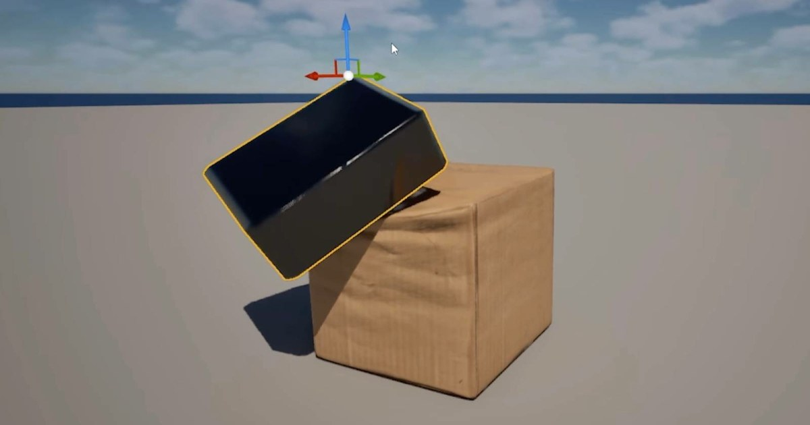

UE5 Shape Cage：以 WPO 做 27 點 GPU 籠狀變形，避開 CPU soft-body 模擬
Shape Cage 用 World Position Offset 在 vertex shader 執行網格變形，依碰撞位置、力道與方向推導 dent，並以約 12 bytes/凹痕的資訊做網路同步。

引擎工具 ★★★★☆
情報簡析
BRIEF｜來源已驗證，但目前證據深度不足以支持完整 Production Analysis。
情報重點
Shape Cage 以 27 點 cage 與 World Position Offset 做 GPU 變形，不修改 CPU mesh，也不依賴 skeletal mesh 或 soft-body solver；碰撞只提供位置、力道與方向，皺褶則以 normal map 補足小尺度細節。
導入判斷
對可破壞／可擠壓道具可先測 Nanite 與非 Nanite、多人同步及高頂點數情境。功能來自 marketplace tool 的展示與作者說明，尚缺獨立 benchmark，因此列 BRIEF。